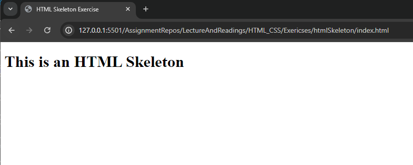
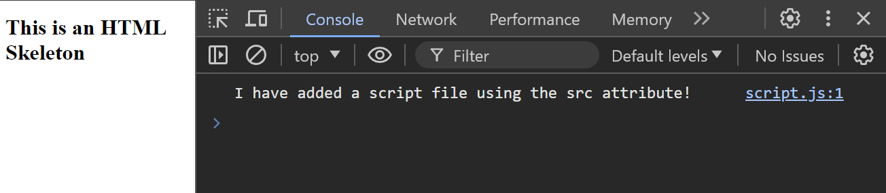

Introduction
Learning some basic concepts we need before diving into JavaScript coding.
Objectives
After completing this assignment, you will be able to:
- Understand basic HTML
- Create an HTML Skeleton
- Use the Developer Console of your web browser
- Run JavaScript code on your web browser
- Write a JavaScript comment
- Print data to the Developer Console using JavaScript
Key Terms
HTML
Stands for HyperText Markup Language. Used to define "things" on a webpage, like buttons, links, paragraphs, and headings.
HTML Element
A single building block of a web page that tells the web browser what to show.
<h1></h1>
HTML opening tag
The start of an HTML element.
<h1>
HTML closing tag
The end of an HTML element.
</h1>
h1 tag
"heading 1", the largest (or most important) heading section on a web page.
<h1>Heading 1</h1>
HTML script element
A script element is use din HTML to add or link to JavaScript code, allowing you to run JavaScript on an HTML page.
<script src="script.js"></script>
Developer console
The developer console is a tool in the web browser where you can see messages, errors, and run JavaScript code to test and debug your web pages. This is where we will find our "console" in console.log().
JavaScript
A programming language that allows for web pages to be interactive and dynamic.
JavaScript comment
A note written in a JavaScript file that is not seen as code. Typically used by developers to explain something about code or prevent some code from running.
built-in function
provided functions like console.log() that you can call using their name and ().
console.log()
a built-in function that accepts a value to output to the console.
console.log("Hello World!");
Introduction Assignment
Make sure to go through the guide to starting an assignment before continuing.
HTML Basics
This course is primarily focused on programming in JavaScript, which usually runs in web browsers. Because of this, it's necessary to understand a few basic concepts in HTML to understand how a webpage works, and how JavaScript is run on a webpage.
For HTML Basics, read the following 2 pages of documentation:
Then, complete the Introduction Exercise: HTML Skeleton below.
Introduction Exercise: HTML Skeleton
-
Double check that you are on the correct branch before continuing.
git statusshould say that you areon branch introduction. -
Open the exercise directory, where you will find 2 files:
index.htmlandscript.js. Currently, both of these files are empty, and you will fill them out throughout the exercises in this assignment. -
Open
index.html, and create an HTML skeleton that includes the following:- a
<!DOCTYPE>declaration - a
<html>element - a
<head>element - a
<title>element that says "HTML Skeleton Exercise" - a
<body>element
- a
-
Add the text
Introduction Assignmentto the<title>tag. -
Add an
<h1>element within the<body>that contains the textThis is an HTML Skeleton. -
Save your file, then right click
index.htmlin the VS Code File Explorer on the left, and select "Open in Live Server". This will open yourindex.htmlfile in a new web browser tab. -
Verify that the title and heading are displaying properly. Example image below:

-
After verifying, take a screenshot of your HTML Skeleton in the web browser and continue to the next section.
HTML Script Tag and Basic JavaScript
The HTML script tag is how we can load JavaScript code into an HTML document so that it runs in the web browser.
For this section, read the following documentation before moving on to the next exercise:
- HTML script tag: Read above the "Attributes" section on this page.
- HTML script tag
srcattribute - console.log() method
- HTML Console Object
- JavaScript Comments
Then, complete the Introduction Exercise: Add JavaScript below.
Introduction Exercise: Add JavaScript
-
Back in the
index.htmlfile you worked on in the HTML Skeleton Exercise, add a<script>element within the<body>that has asrcattribute ofscript.js.Note: Technically you can add JavaScript code directly inside the
<script>element, but we won't be doing that in this course, since that's not the recommended way to write JavaScript. -
Open
script.js, and add aconsole.log()statement which prints out the message"I have added a script file using the src attribute!"and save the file. -
On the next line, add a single line comment that says:
// This is a single-line JavaScript comment -
Afterwards, add a multi-line comment with the following text:
/* This is a multi-line comment. I can write as many lines of text as I want here. And none of it will be seen as JavaScript code. */ -
Finally, add a single line comment with code:
// console.log("This should not print out since it's in a comment"); -
Open
index.htmlusing Live Server (just like Step 6 in the HTML Skeleton Exercise above) if it's not already open. -
Anywhere on the page, right click and select the
inspectoption from the menu. -
Click on the
consoletag in the inspector. This is your Developer Console, and this is where you will view output from your JavaScript programs. Confirm that the console log message from above is showing in the your Developer Console.Note: You may see some error messages highlighted in red or yellow, such as "Failed to load resource". Don't worry. This should not affect your code. You should only worry if you see a JavaScript related error that points to your
script.jsfile, like "Uncaught TypeError".Note: The shortcut to open the last-opened panel is
F12. So, since your last-opened panel should now be theconsoletab, you can use theF12shortcut to open directly to theconsoletab next time. -
When your output matches the example below, you are ready to submit the exercise.

-
Take a screenshot of your Developer Console before submitting your solution.
Submitting
Please follow the instructions in submitting an exercise to submit your assignment solution.